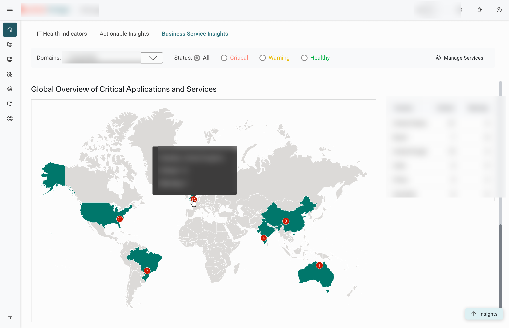
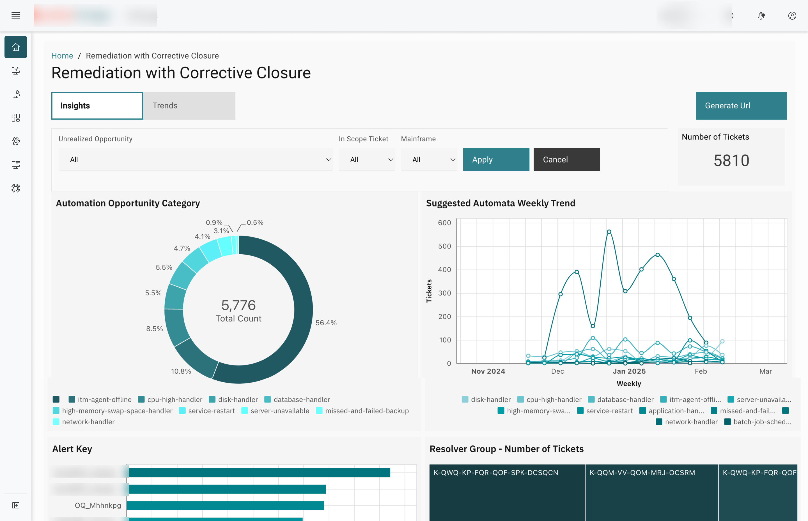
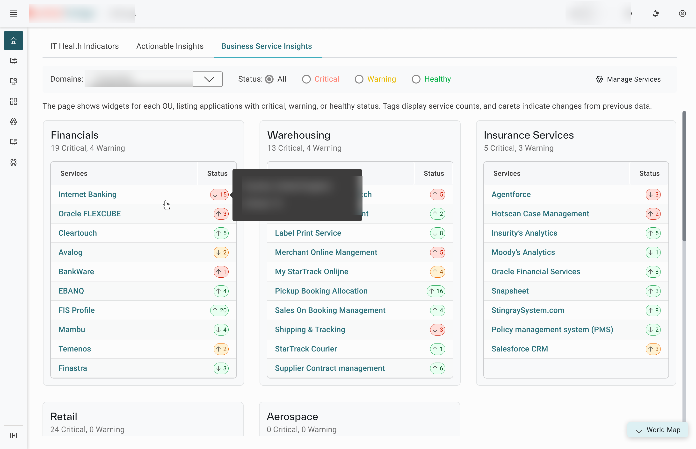

A recovery order concept for enterprise workloads — sequencing dependency-aware recovery instead of bringing everything back online at once.
This case study focuses on one specific capability within Business Service Insights: a recovery order concept for workloads. When an incident takes down multiple interdependent applications, Kyndryl's platform was recovering all of them in parallel — with no way to say a database needed to come back online before the application that depends on it.
The users were delivery managers and operators — the people responsible for actually executing recovery during an incident, often under time pressure, across environments where getting the order wrong turns one incident into two. The ask was to design a way to group workloads and define the sequence they should recover in, so dependency order became something the system respected rather than something operators had to manage by hand.
UX Designer, owning the interaction design for this feature end to end.
I took this from a one-line problem statement — recovery happens in parallel, with no sequencing — through to a build-ready interaction spec, working closely with product to keep the design anchored on how delivery managers and operators actually think about dependency during an incident.
The hard part wasn't any single screen — it was making a genuinely technical dependency problem (what has to start before what) usable under incident pressure, for two audiences at once: delivery managers who think in terms of business services, and operators who think in terms of individual workloads.
There was also a scale constraint built into the brief from day one: up to 200 workloads across 10 recovery orders. That ruled out any interaction pattern that only worked cleanly for a handful of items — the design had to hold up whether someone was managing 5 workloads or 150.
Every control here had to earn its place at 200-workload scale — this was constraint-first design, not a blank canvas.
The interaction spec shipped into the Business Service Insights platform, surfaced through the existing global service-health view — so recovery-order sequencing wasn't a separate tool bolted on, but part of the same screen delivery managers already used to see what was critical.



The shift: recovery moved from an all-at-once operation with no guardrails to a sequenced, dependency-aware process that delivery managers could actually trust during an incident.
Drag-and-drop is still listed as "a consideration" in this spec, not a confirmed decision — if I were doing this again, I'd push to validate it with real delivery managers and operators before finalizing the interaction, rather than letting it sit as an open question into build. I'd also want to pressure-test the icon-based add/remove controls at the upper end of scale — a pattern that feels fine at 10 workloads can get genuinely tedious at 200, and that's exactly the kind of thing that only shows up when you test at the real ceiling.
I'd also tighten the definition of the default recovery orders before implementation. The brief is clear that users can modify the defaults, but it doesn't yet define what a sensible out-of-the-box starting point looks like for a typical customer — that's the kind of ambiguity that turns into rework once engineering starts building against it.
The core of this problem was structural, not visual — which controls exist, how they behave at scale, what happens at the edges — so most of the time went into interaction logic and edge-case walkthroughs rather than high-fidelity screens.
I reviewed the user story and problem statement iteratively with product to keep it honest to the delivery-manager/operator use case, and worked with engineering to confirm the 200-workload, 10-recovery-order ceiling was realistic within the existing platform architecture before it went into the spec.
Enterprise UX for AI-driven IT operations.
← All work